山と海に囲まれた
鎌倉・長谷の邸宅、HASE。
石と無垢材がつくる住空間を、
個別内覧でご体感ください。
家には、二種類あります。
建てた時が、いちばん美しい家。
そして歳月とともに美しくなる家。
このHASEは迷うことなく後者を選びました。
本物の素材をあしらったその佇まいを、
どうぞ現地でご覧ください。
間取りをタップすると拡大できます
間取りをクリックすると拡大できます
ー鎌倉・長谷一丁目ー
写真には一部３Dパースを使用しています
現地でお確かめいただけること
本物の銘木・銘石と上質な設備、全館空調の心地よさを体感。
銘木や銘石といった触れるほどに深みを増す本物の素材と、イタリア製キッチンや高級バスなどの日常を超える仕様。一年中快適な全館空調が織りなす、至高の暮らしをご体感いただけます。
詳しく見る ＋愛車で実際に駐車し、広さと乗り降りのしやすさを確かめられます。
ご自身の愛車を実際にインナーガレージへお乗り入れいただき、収まり具合や乗り降りのしやすさを体感していただけます。奥行き6.3m・横幅3.5m・高さ2.8mの空間に、ご自宅の駐車場では分からなかった「余白」を確かめてください。
詳しく見る ＋16.25帖のルーフバルコニーで、360°の眺望とさざ波の音を。
16.25帖のルーフバルコニーから、360°パノラマで文学館の山と遠くの海を望む。耳をすませば、さざ波の音。都心では得られない開放感がここにあります。
詳しく見る ＋シームレスな空間設計
どれほど良い素材も設計次第。この邸宅が追求したのは、内と外の「境界」を消す設計思想です。玄関から室内へ続くタイルが境目を曖昧にし、視線は外へ自然と抜けます。海風の気配や古都の緑、移ろう光が、遠い風景ではなく暮らしのすぐ隣の空気として流れ込みます。
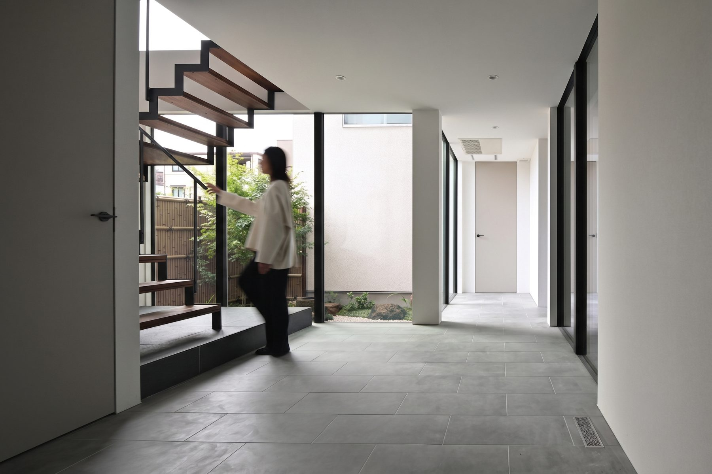
活動階と居室を分けたことで、大空間のLDKが生まれました。併設したバルコニーが空間をさらに広げ、ダイニングとリビングにやわらかな光と風を取り込みます。イタリアのキッチン「ミッテルクッチーネ」と「大谷石」と「玄昌石」が特別なラグジュアリー空間を形成します。
設計の思想が最も際立つのが、最上階のルーフバルコニーです。視界をさえぎるものが何ひとつないこの場所に立てば、文学館の山も、遠くの相模湾も、もう「眺めるもの」ではありません。海と空とのあいだに境界はなく、この場所すべてが我が家の延長になる。耳をすませば、遠くにさざ波の音が聞こえます。
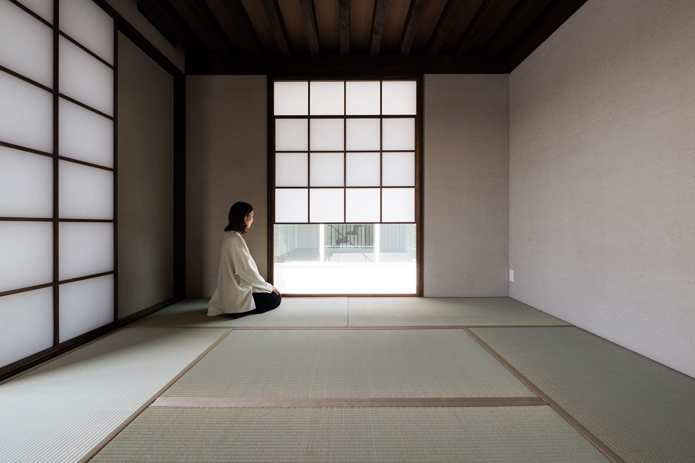
本物の石や無垢の木は、自然光のもとでこそ、その表情を最も美しく見せます。このHASEは、どの時間帯にどう光が差し込むかまで計算し、素材が一日を通じて豊かに移ろうよう開口を配置しました。朝の澄んだ光、夕刻の深い陰影。素材と光が呼応するとき、住まいは絵画のように表情を変えます。
本物の素材と設備を、
本物のまま生かしきる。
それが、
このHASEの設計です。
家事、広さ、収納。間取りを追求
家事の移動を減らす動線、開放感のあるLDK、片付けやすい収納。ラグジュアリーな空間設計だけでなく暮らしやすさも妥協していません。多くのご家族に支持されてきた間取りの工夫を生かした、暮らしの設計力をご体感ください。
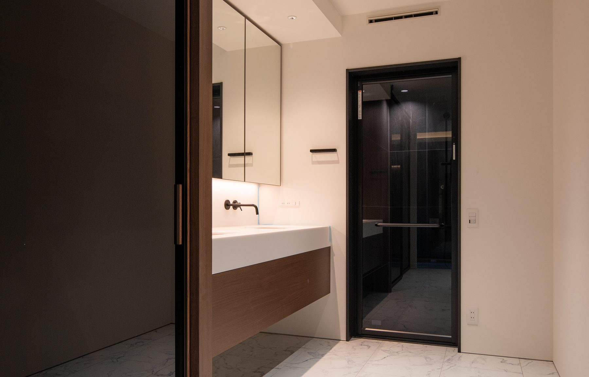
洗濯・収納が同じフロアでひと続き。乾太君やドライルーム機能を使えば1階と2階を往復せず、家事が驚くほどスムーズに回ります。
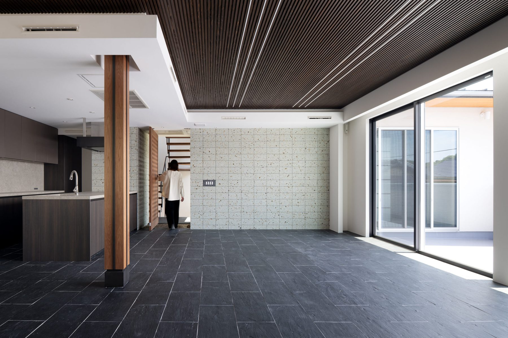
玄関から廊下、洗面所、トイレに至るまで、ヒノキヤグループの「Z空調」が家中を24時間一定の温度に保ちます。部屋ごとの温度差がほとんどないため、冬はヒートショックの心配がなく、夏はどこにいても涼しい。高い気密・断熱性能とダイキン製の高効率エアコンで、電気代を抑えながら一年中快適です。
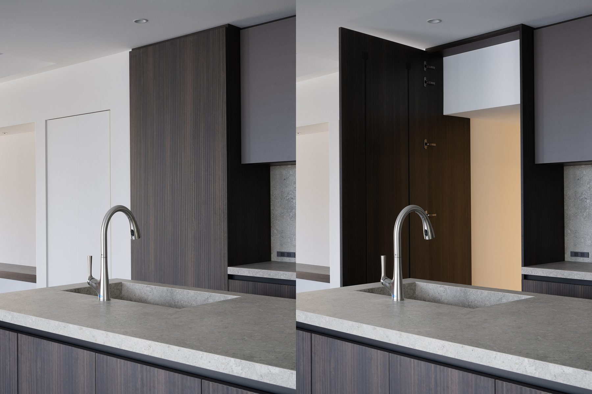
キッチン裏には3.89帖の隠し部屋。大容量パントリーとしても書斎としてもご活用いただけます。そのほかにも各居室にウォークインクローゼット、シューズインクローゼット、独立したクローゼットなど収納には全く困らない仕様です。
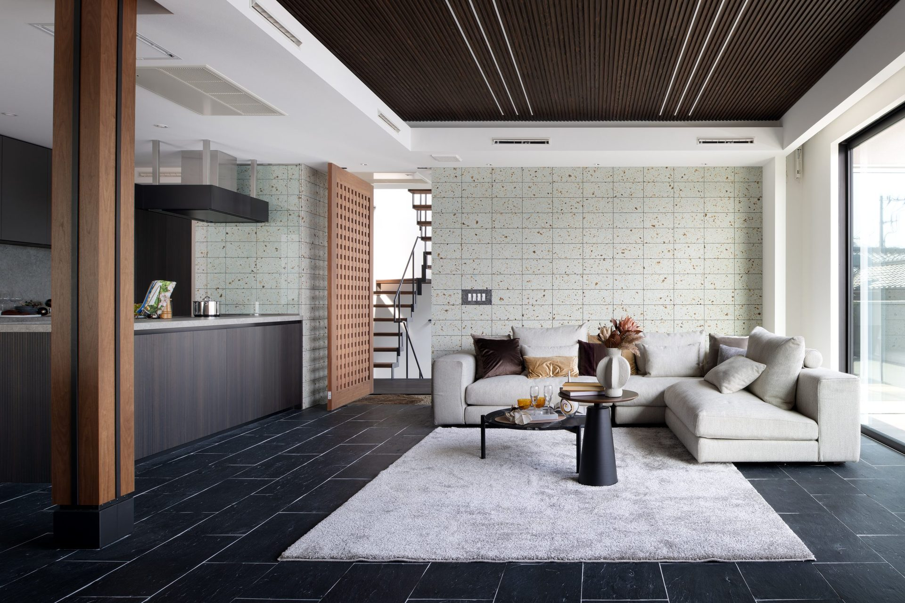
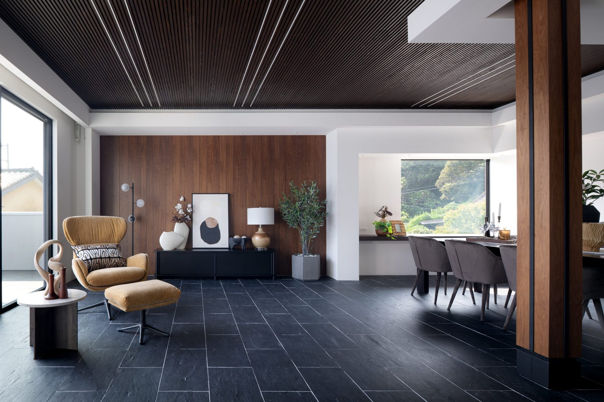
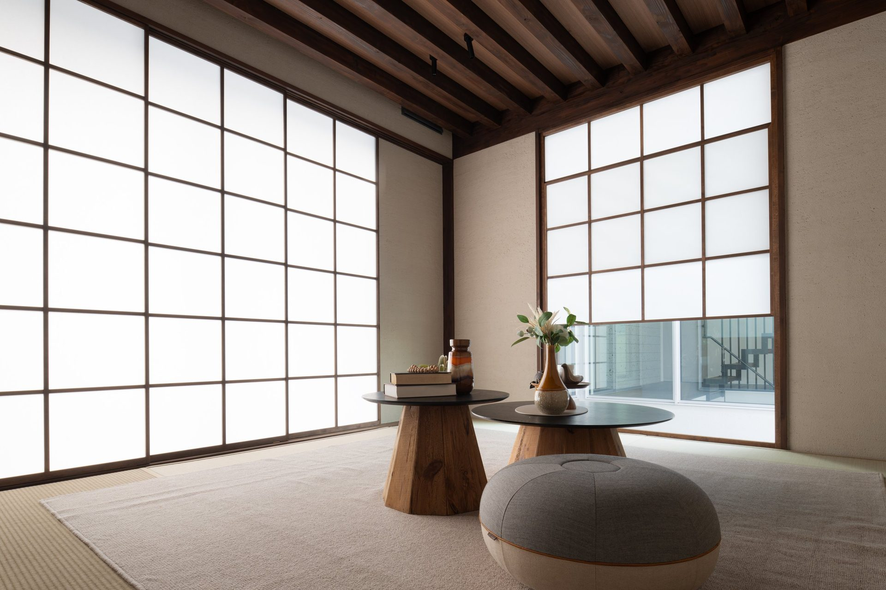
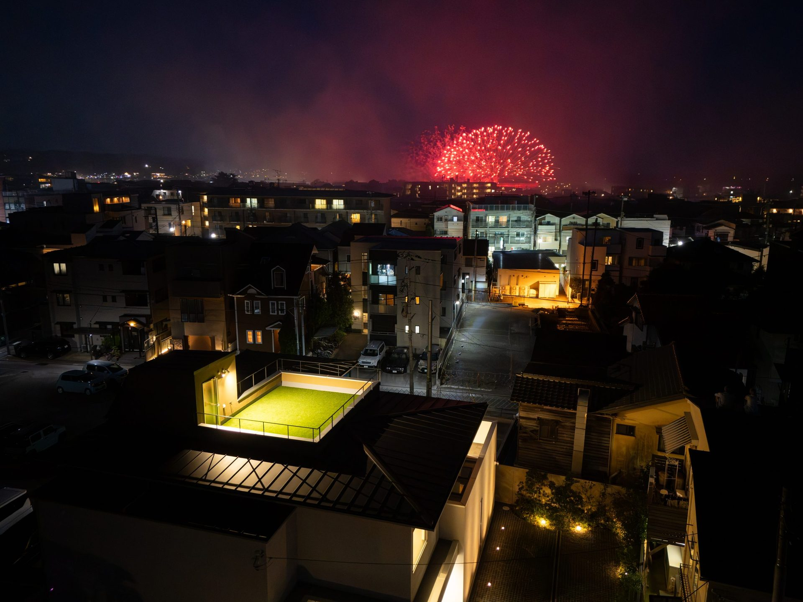
この邸宅で過ごす、ある一日
全館空調で家じゅうが同じ温度だから、寝室を出ても廊下で身がすくむことがありません。カーテンを開け、湯を沸かし、そのままルーフバルコニーへ。急かされる予定も、合わせるべき誰かもいない。二人分のコーヒーが冷めるまで、ただ座っている朝があります。
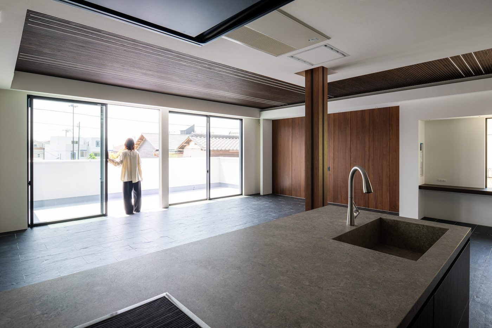
由比ヶ浜までは歩いて約10分。散歩のつもりで出て、気が向けばビルトインガレージから車を出す。電動シャッターを開ければ、雨の日も濡れずに出発できます。予定を立てずに動けること。それが、この土地に住む理由のひとつになります。
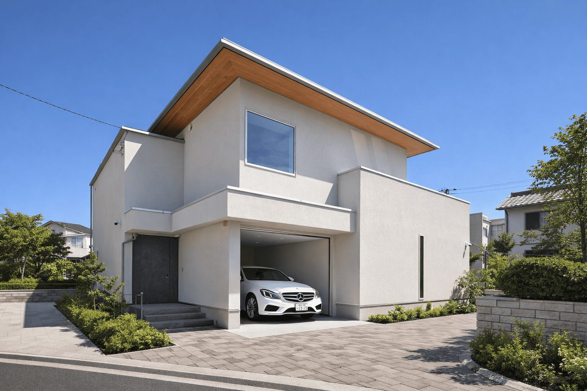
8.0帖の和室は、使い方を決めていない部屋。畳に座って茶を淹れる日もあれば、本を持ち込んで横になる日もある。京・北山杉の床框に、皮を残したままの赤松の床柱。ふすまを閉めれば、同じ家のなかでそれぞれひとりになれます。
夕食のあとは、16.25帖のルーフバルコニーへ。椅子を二脚出しても、人を招いても狭くありません。灯りを落とせば視界をさえぎるものは何もなく、相模湾の方角から遠いさざ波の音だけが届きます。話さなくてもいい時間が、いちばん長く記憶に残ります。
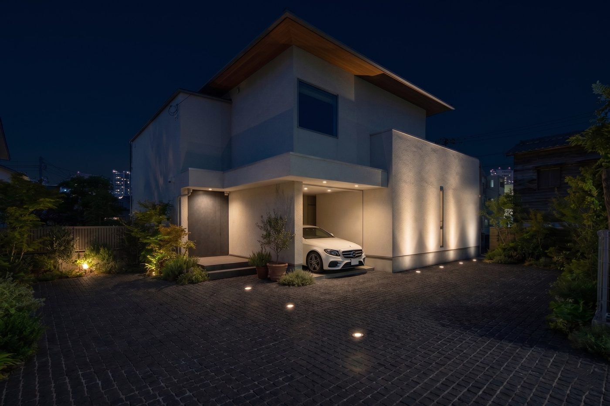
現地でお確かめいただけること
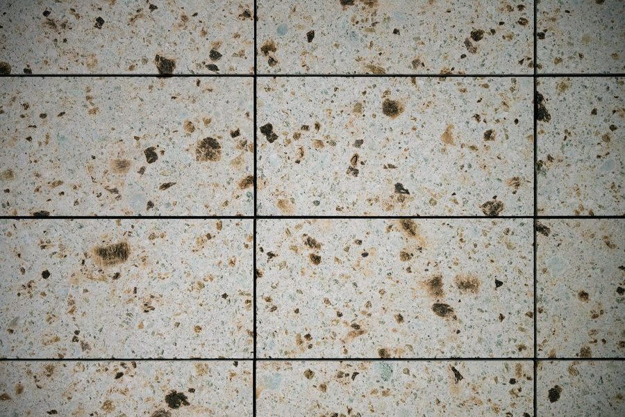
本物の銘木・銘石と上質な設備、全館空調の心地よさを体感。
銘木や銘石といった触れるほどに深みを増す本物の素材と、イタリア製キッチンや高級バスなどの日常を超える仕様。一年中快適な全館空調が織りなす、至高の暮らしをご体感いただけます。
詳しく見る ＋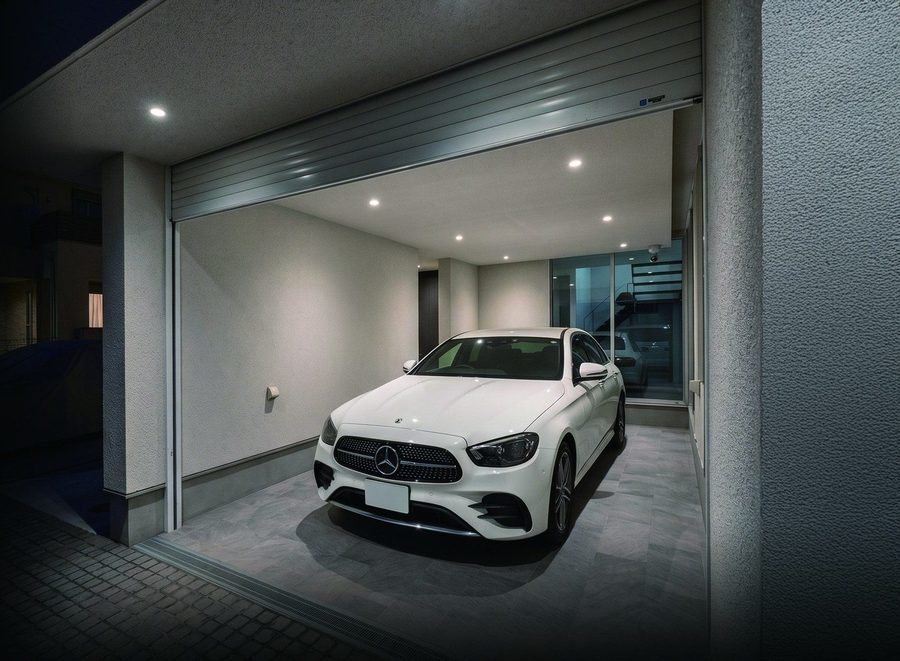
愛車で実際に駐車し、広さと乗り降りのしやすさを確かめられます。
ご自身の愛車を実際にインナーガレージへお乗り入れいただき、収まり具合や乗り降りのしやすさを体感していただけます。奥行き6.3m・横幅3.5m・高さ2.8mの空間に、ご自宅の駐車場では分からなかった「余白」を確かめてください。
詳しく見る ＋16.25帖のルーフバルコニーで、360°の眺望とさざ波の音を。
16.25帖のルーフバルコニーから、360°パノラマで文学館の山と遠くの海を望む。耳をすませば、さざ波の音。都心では得られない開放感がここにあります。
詳しく見る ＋本物件を手がけた
プリンシパルホームとは
プリンシパルホームは町田で始まり、22年。地域に根ざした家づくりを続け、数多くのご家族の夢を形にしてきました。
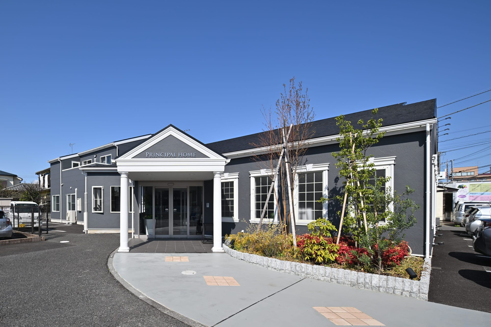
グッドデザイン賞（2024年）／キッズデザイン賞（2024年）／ジャーマンデザインアワード（2025年）ほか、国内外の権威あるデザイン賞を多数受賞しています。
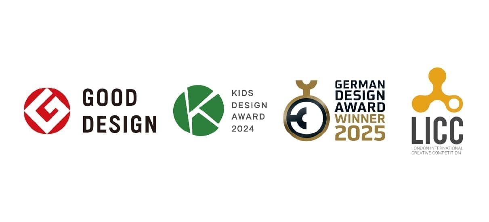
HASEの間取りや動線を参考に、お客様それぞれの過ごし方やご要望に寄り添った注文住宅のプランもご提案いたします。土地探しや家づくりのご相談、未公開の土地情報のご提供、建築費用のご相談も承ります。どうぞお気軽にお問い合わせください。
リビングの広がりや素材の手触り、屋上からの眺めを現地でお確かめいただけます。
はじめての方へ
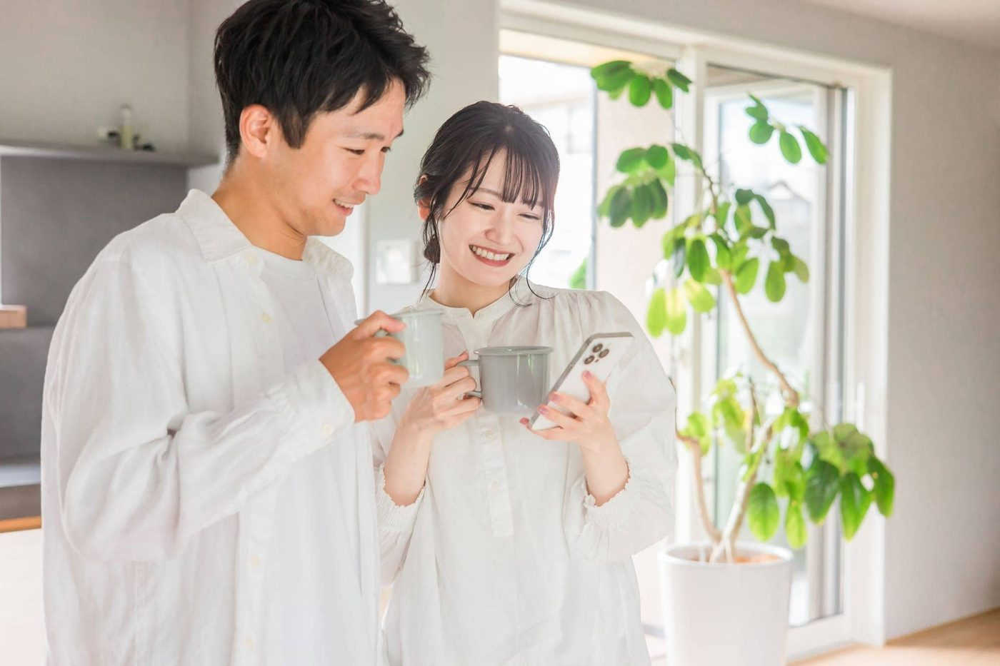
本ページの「この物件の内覧を予約する」ボタンから、ご希望の日時を選択して送信してください。24時間いつでも受け付けております。
お申込み内容を確認後、3営業日以内に担当者よりお電話またはメールにてご連絡し、内覧日時を確定します。集合場所や、お車でお越しの方には駐車スペースもあわせてご案内します。
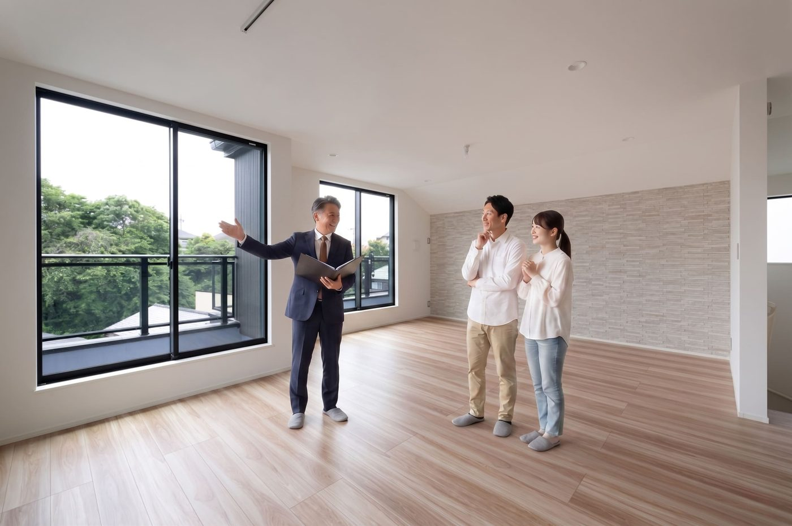
所要時間：約60〜90分
確定した日時に、ご案内した集合場所へお越しください。担当者が物件をご案内します。間取りや素材、設備について、気になる点を何でもお尋ねください。
※お申し込み時点では日時は確定していません。
担当者が日時と集合場所をご案内します。
FAQ

買うのではなく、受け継ぐ。
住まうのではなく、暮らしを紡ぐ。
本物に囲まれた日々は、
住まう人の心まで、
静かに豊かに育てていく。
そんな一生に出会う場所が、
ここにあります。
Company
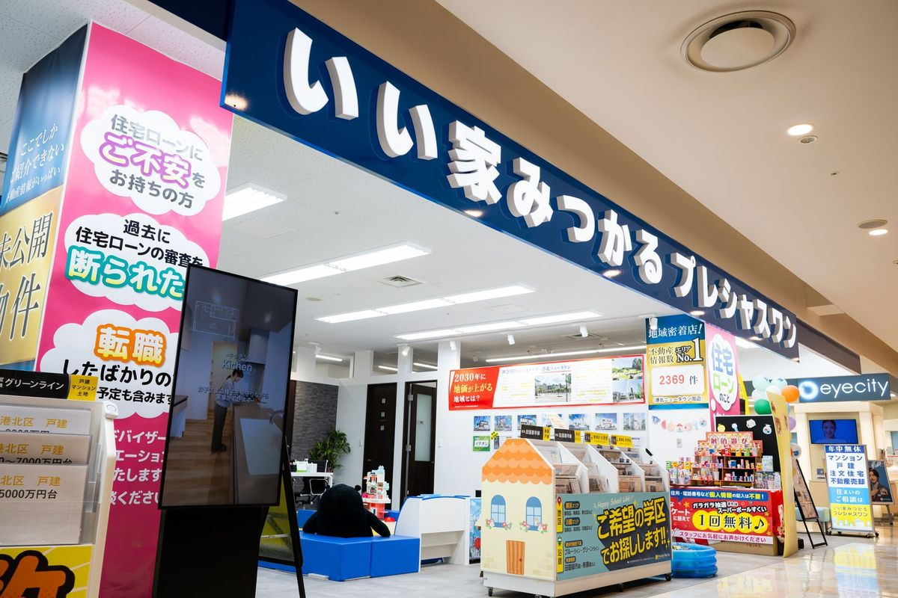
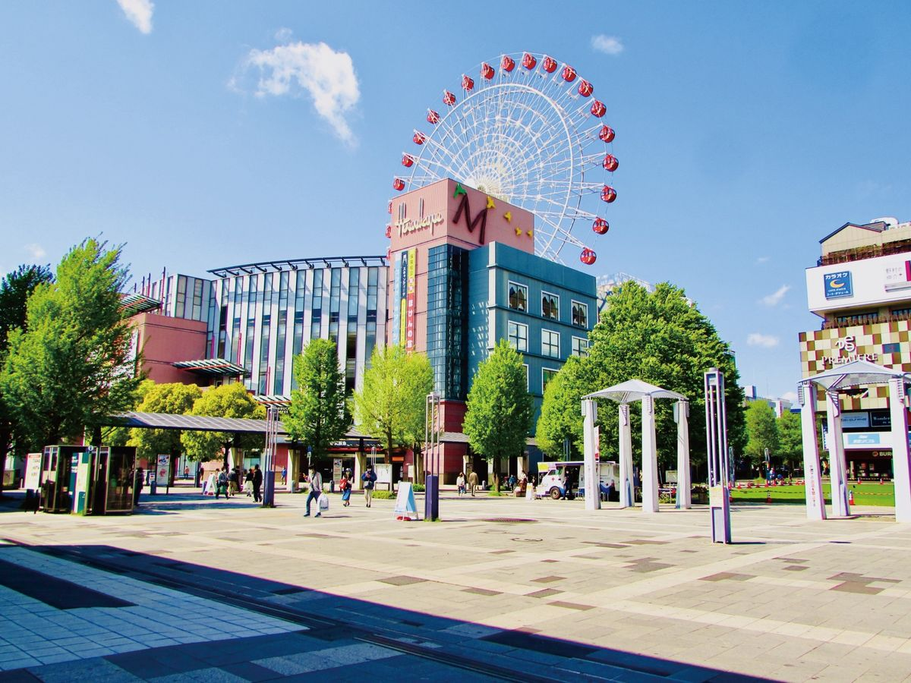
個別内覧は完全予約制です。
物件資料のみのご請求も承ります。
個別内覧は完全予約制です。
物件資料のみの
ご請求も承ります。